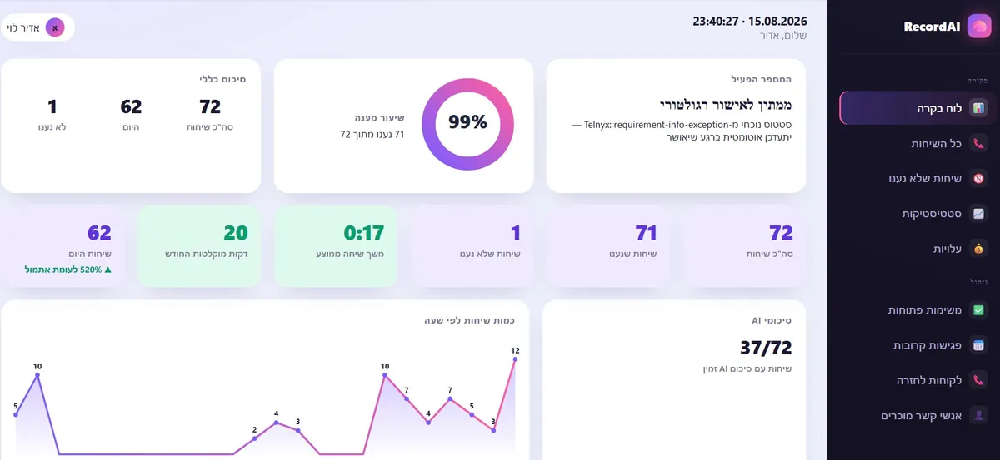

"אני בודק ואחזור אליך עוד שעה." כמה פעמים אמרתם את המשפט הזה ללקוח — ואז הגיעה שיחה אחרת, ועוד אחת, והשעה הפכה ליום? הלקוח לא שכח. הוא חיכה, ובסוף התקשר למתחרה. סיכום שיחה אוטומטי שמזהה הבטחות ומזכיר לכם עליהן בזמן פותר בדיוק את הרגע הזה.
הבעיה: הבטחות בטלפון נעלמות
בשיחת טלפון עסקית נאמרים דברים שאף אחד לא כותב: מחיר שסוכם, מסמך שהבטחתם לשלוח, שעה שבה תחזרו. כשיש עשר שיחות ביום, הזיכרון לא מחזיק. הלקוח לא תמיד יתקשר להזכיר — לרוב הוא פשוט יסיק שהעסק לא מסודר. חזרה ללקוח שנשכחה היא אחת הדרכים הכי שקטות לאבד עסקה.
הפתרון: סיכום שיחה שמזהה מה הבטחתם
זו אחת התכונות המרכזיות ב-StopZkor, המערכת ש-A.L Systems, בניהולו של אדיר לוי משדרות, בנתה להקלטת שיחות (היום באנדרואיד, ובקרוב גם באייפון). השיחה מוקלטת ברקע, ובסיומה מחכה באפליקציה דוח מסודר:
- נקודות מרכזיות — על מה דיברתם, מה הלקוח ביקש ומה הוזכר
- פעולות מומלצות — מה צריך לעשות עכשיו, ברשימה ממוספרת
- תזכורות ומעקב — כל התחייבות שנאמרה בשיחה, עם התאריך או השעה שלה
- תובנה — משפט קצר שעוזר להבין מה חשוב בשיחה הזו

התזכורת מגיעה בדיוק בזמן
אמרתם "אחזור אליך עוד שעה"? הסיכום מזהה את זה, ואחרי שעה הטלפון מקפיץ התראה: צריך לחזור ללקוח. לוחצים עליה ומגיעים ישר לסיכום השיחה, כך שגם אחרי עשר שיחות אחרות אתם יודעים בדיוק על מה דובר ומה הבטחתם. אם בשיחה נקבע תאריך או יעד, אפשר להוסיף אותו ליומן באישורכם, עם קישור ניווט מוכן ב-Waze או Google Maps.
לקוח לא זוכר בהכרח מה אמרתם לו בשיחה. הוא כן זוכר אם חזרתם אליו בזמן שהבטחתם.
מה זה משנה בעיני הלקוח
עסק שחוזר בזמן שהבטיח נראה מסודר ואמין — גם אם הוא עצמאי שעובד לבד מהרכב. אין צורך לשנות הרגלים: מתקשרים ומקבלים שיחות בדיוק כרגיל, וההקלטה, התמלול, הסיכום והתזכורות פועלים ברקע. אם רוצים לשלוח ללקוח את עיקרי הדברים, אפשר להעתיק או לשתף את הסיכום ידנית בלחיצה.
תיעוד שנשאר אצלכם
כל סיכום נשמר באפליקציה, מתויג לפי איש קשר ותאריך, עם חיפוש לפי מילה או מספר. הדשבורד מראה כמה שיחות היו, כמה סוכמו, כמה תזכורות פתוחות ובאילו שעות מתקשרים אליכם הכי הרבה. אם הלקוח מתקשר בעוד חודש ושואל "אבל אמרתם לי משהו אחר", הסיכום כבר שמור ונגיש.
זיכרון מול סיכום אוטומטי
| מה קורה בפועל | על סמך זיכרון | פתקים ידניים | StopZkor |
|---|---|---|---|
| תיעוד מה סוכם | אין | רק אם נזכרים לכתוב | סיכום אוטומטי בסוף כל שיחה |
| תזכורת לחזור ללקוח | לא | רק אם הגדרתם בעצמכם | התראה בזמן שהבטחתם |
| תאריך שהוזכר בשיחה | נשכח | הקלדה ידנית ליומן | הוספה ליומן באישורכם, עם ניווט |
| חיפוש בשיחות ישנות | לא | קשה | לפי איש קשר, תאריך או מילה |
למי זה הכי מתאים
לעצמאים, אנשי מכירות, סוכנים ונותני שירות שמנהלים הרבה שיחות ביום ומבטיחים ללקוחות לחזור אליהם — ורוצים שאף הבטחה לא תיפול בין הכיסאות. למדריך המלא על הקלטה באנדרואיד ראו הקלטת שיחות באנדרואיד לעסק.
שאלות נפוצות
איך המערכת יודעת שהבטחתי לחזור ללקוח?
הסיכום מזהה בשיחה התחייבויות כמו "אחזור אליך בעוד שעה" או "אשלח לך הצעה מחר", ומוסיף אותן לחלק התזכורות. כשמגיע הזמן, מקבלים התראה בטלפון.
מה כתוב בסיכום השיחה?
נקודות מרכזיות מהשיחה, פעולות מומלצות, תזכורות ומעקב ותובנה קצרה. אם הוזכר תאריך או יעד, אפשר להוסיף אותו ליומן באישורכם ולקבל קישור ניווט מוכן.
צריך לשנות משהו בהרגלי השיחה כדי שזה יעבוד?
לא. ההקלטה והסיכום פועלים ברקע באמצעות StopZkor — מתקשרים ומקבלים שיחות בדיוק כרגיל, והכול קורה מאחורי הקלעים.
הלקוח מקבל את הסיכום?
לא אוטומטית. הסיכום נשמר אצלכם באפליקציה. אם רוצים, אפשר להעתיק אותו או לשתף אותו ידנית בלחיצה.